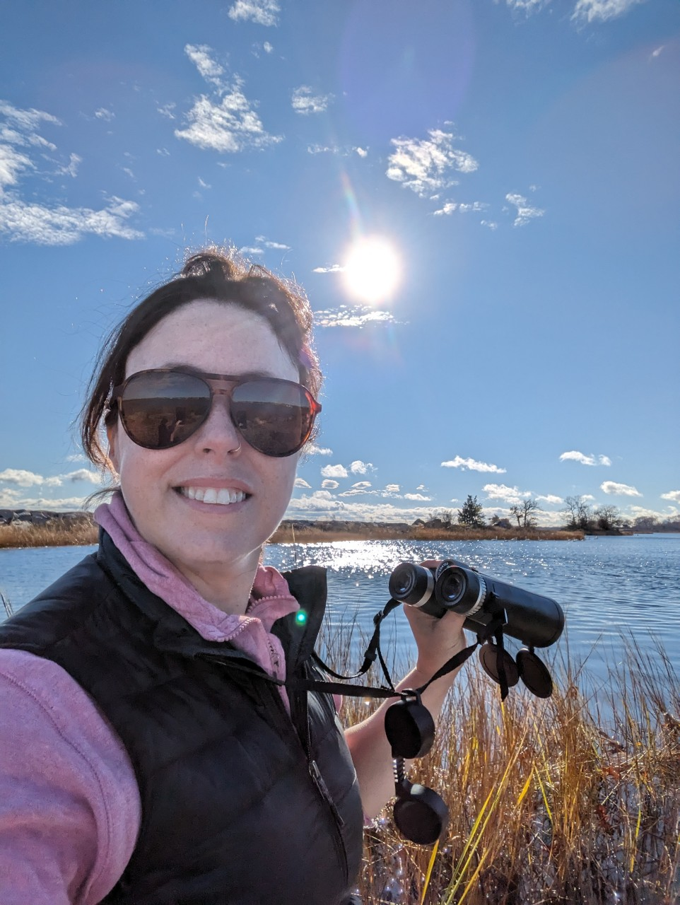
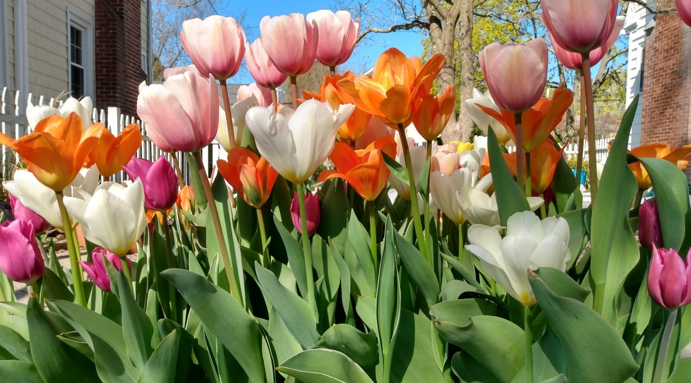

|
 |
 |
 |
|---|

Hi! I'm Elizabeth Bullock. I am currently a senior at the University of Rhode Island
and will graduate come August with a bachelor's of science degree in Wildlife and Conservation Biology.
Currently, I'm expanding my technical and quantative skills.
 I will graduate with programming experience
in R, Javascript and using GIS. I would like to further my education in computational biology and ecology.
I will graduate with programming experience
in R, Javascript and using GIS. I would like to further my education in computational biology and ecology.
When I'm not studying, I'm spending time with my two children and two collies. I am an artist, gardener and avid naturalist. I like to be outside in my natural habitat.
